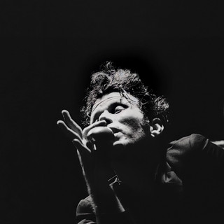
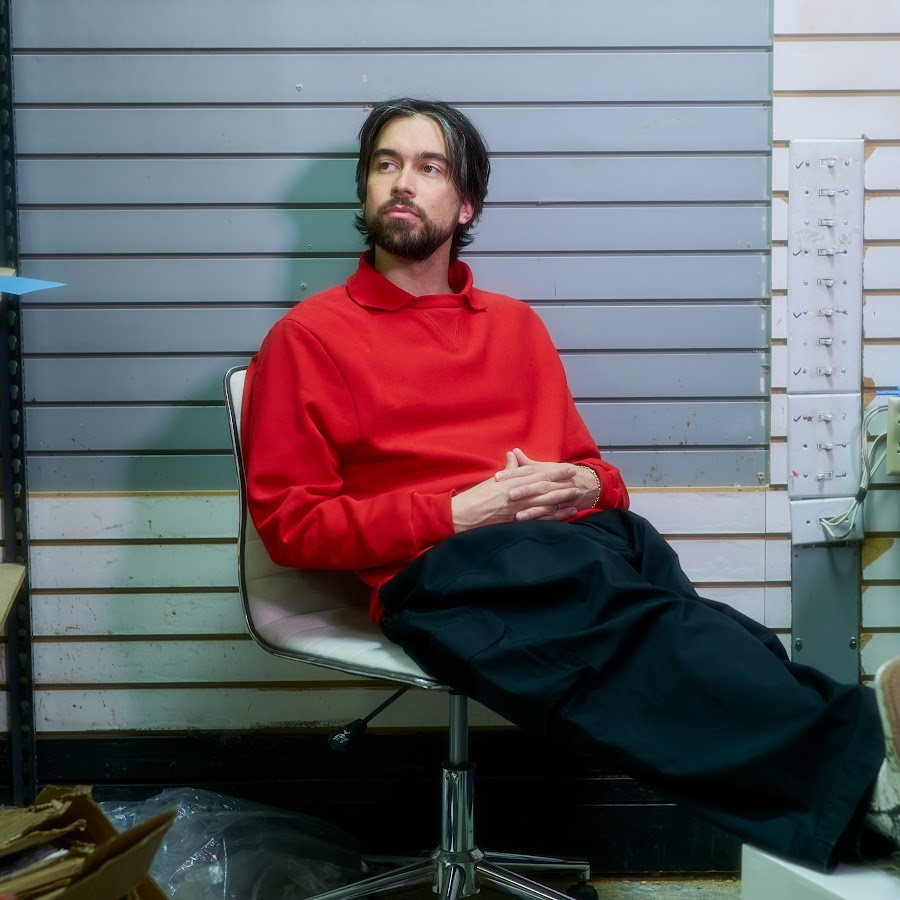
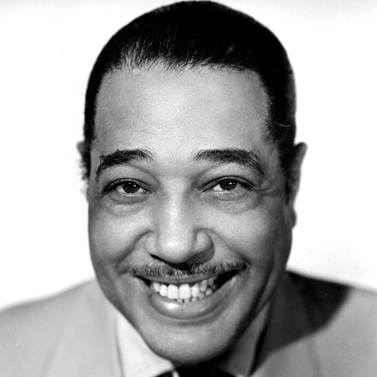
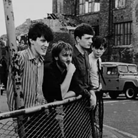

Here is a video of me playing guitar. It is just a short and simple song I came up with.
This is a my Spotify page. So far, I have released an EP and two singles.
I do not really want to (or think I could) be a famous musician, I just like making music.
Here is a list of my top five favorite instruments.
Acoustic Guitar
You can do so many things with it, and it has a massive range of playability.
It just sounds good.
Electric Bass
Bass is just so fun and musical. I want a bass so bad.
I love the way bass makes the groove of a song.
Violin
Violins sound so nice. Since there are no frets, it sounds so raw to me.
I really like when I hear a violin accompany the song.
Drums
Drums are the thing that make you tap along to the song.
A song can really sound lacking if it does not have drums in it.
The Cure has really nice and punchy drums.
Synthesizer
I like how dynamic synths can be. You can program them to get any specific sound.
I use synths to create more atmosphere, but I also like when they are melodic like with New Order.
I listen to a lot of music, and I frequently change my favorite artist or what I enjoy listening to.
Here are some artists I always like to listen to.
Elliott SmithThe greatest song ever (Between the Bars).

Tom Waits

Alex GCrystal CastlesThe Brian Jonestown MassacreRegina Spektor

Duke Ellington

Joy Division